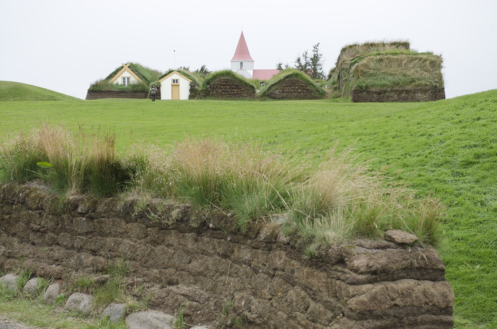
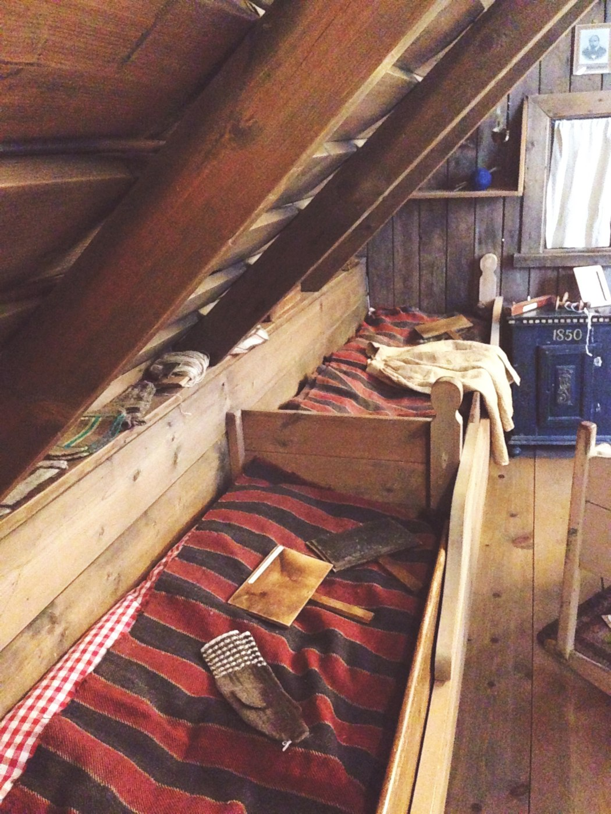

遠看冰島的草皮屋，最醒目的是屋頂上的草。低矮的房子連著起伏的地面，草皮屋頂下的木頭山牆上，露出門窗。這個外觀很容易讓人停下拍照；但住在裡面的人，得處理的是另一組問題：木材從哪裡來？一家人在哪裡做事、睡覺？地板濕了怎麼辦？把視線從屋頂往屋裡移，這些房子才逐漸顯出生活的模樣。
冰島的草皮屋由幾種材料配合而成。木柱與橫梁構成骨架，屋頂上有木材等承托層，再覆上草皮；厚牆則以草皮、石材或兩者組合砌成。這裡的草皮連著根系和土壤，切下來能成條、成塊，作為建材使用。
草皮既用在屋頂，也用來築牆。根系讓土塊彼此牽連，厚牆與屋頂有助保溫。木頭則用於屋內的重要結構與裝修。只看表面的綠色，容易漏掉藏在裡面的柱、梁和木板，也看不見這些材料各自的用途。
建造方式還得配合當地能取得的東西。北部的 Glaumbær 農舍所在地缺少合適的石材，牆體便大量使用草皮；構架和內部鑲板用到漂流木與進口木材。所謂因地制宜，落到一間房子裡，就是哪些材料能就近切取，哪些得設法運來，又要把它們放在哪裡。

Glaumbær 面向庭院的山牆，容易讓人以為每一道門後都是獨立的小房子。走進去，卻會遇到連接屋群的通道：廚房、食品儲藏、起居空間與其他工作場所，分在不同單元裡，再由走廊串起。這類布局因此被稱為走廊式農舍。
這些單元往往是不同時期陸續增建、重建的。Glaumbær 現存部分建築可追溯至十八世紀中葉，較晚的增建則來自十九世紀。今天看見的屋群，收納著幾代人對空間的調整。
通道把分散的工作接起來，也區分了屋裡不同的位置。Glaumbær 的 baðstofa 位在走廊深處，是聚集生活與手作的重要房間。從外面的屋頂數目，還不容易明白一家人如何相遇；沿著通道走，才看得出日常活動的關係。
baðstofa 同時承擔起居、工作與睡眠等用途。人在這裡坐著做手工，也在這裡休息。對習慣把工作桌、客廳和臥室分開的人而言，這樣的安排提醒我們：一個房間的用途，可以隨著一天裡正在做的事改變。
不過，草皮做的外殼相近，屋內條件卻可能差很多。木材較難取得，鑲板和木地板的多寡，也反映屋主能動用的資源。有的房間以木板包覆，有的保留外露草皮牆與泥土地面。厚牆之內，仍看得見財力和身分的差異。
同在冰島北部的 Laufás，如今保存的是十九世紀後半富裕牧師住宅的樣貌。草皮建築曾用作不同階層的住宅，也用作教堂和農場附屬建物。同樣的草皮技術，用在不同身分和用途的建築上。要問住得如何，還得走進具體的房間，看有哪些設備、由誰使用。

了解一間屋子怎麼住過，除了看房間和家具，也可以看腳下。考古學者 Karen B. Milek 在冰島東北部的 Þverá，研究十九至二十世紀草皮建築的地板。她把地層的微細結構，與曾住在那裡的人對空間和家務的描述放在一起比對。
研究記錄了維護地板的做法：人們在變濕、磨損或凹凸不平的地方補上灰料，有些地方重新鋪草皮，太厚的舊地層則清走。這些動作會留下新的層次，也會改變原本做飯、儲物或走動留下的痕跡。
因此，在地板裡找到灰，不一定就找到了做飯的位置。灰也可能被人搬來吸濕、填補地面。Milek 的研究顯示，有些殘留物更清楚記下了維護，而非房間原有的日常用途。屋子如何保持可住，本身就是生活史的一部分；研究者也得先理解家務，才能讀懂留下來的地板。
草皮的根系會老化，木材會腐朽，厚牆和屋頂都得定期檢查、修補。不同地點的氣候、材料和施工，影響更新的頻率。有時需要拆下某段牆、換上新草皮，能用的石頭與木料則留下來再用。
相連的屋群也容許分單元處理：一部分需要重做，其餘空間仍可繼續使用。房子的延續，靠的是人能辨認哪裡已經不行、怎麼拆、哪些材料還值得保留。對這種建築而言，留下老屋的形制和技術，與更換耗損材料可以同時進行。
BBC 記者在 Glaumbær 採訪修復者時，對方提醒，修得好看與修得符合歷史是兩件事。草坡般的輪廓容易被模仿，砌牆的方式、材料的選擇和屋內的用途，卻需要更仔細的知識。保存的工作，因而也包含讓人學會怎麼繼續修。
Glaumbær 的最後住戶在 1947 年搬離，農舍後來成為博物館的展示空間。今天走進去，是透過被保存、修整和陳列過的房間接近過去。Laufás 的館方也交代，屋內陳設有些來自原地，更多來自鄰近農場；眼前的場景，需要連著這些說明一起看。
這些說明讓參觀多了一個方向。除了欣賞草皮屋頂和整齊的木牆，還可以想像人如何分配空間、取得材料，又怎樣把潮濕或磨損的地面整理到能繼續過日子。漂亮的房子與費力的家務，原來可以是同一個家的兩面。
把這些房子帶回今天的生活，可以重新想想「住得好」是什麼意思。一個家的舒適，既有材料與布局帶來的條件，也有一直補上、清走、整理和照顧的工作。當那些工作被看見，房子才不只是可供欣賞的外形。